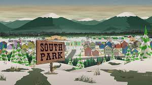

The boys live in the fictional small town of South Park, located within the real-life South Park basin in the Rocky Mountains of central Colorado,[7] approximately a one-hour drive from Denver.Prominent settings include South Park Elementary, various neighborhoods and the surrounding mountain range, actual Colorado landmarks, and the businesses along the town's main street, all of which are based on the appearance of similar locations in Fairplay, Colorado.[7][9] As one of the few television programs set in the Mountain West region that takes place outside the urban core of Denver, South Park frequently features the unique culture of the region, including cattle ranchers, Old West theme parks, snowy climates, mountaineering, Mormons, real-life Colorado locations such as Casa Bonita and Cave of the Winds, and many other regionally specific characteristics.